|
The Conar Instruments Company of Washington, D.C. was a comparative latecomer to the kit business, since it first offered kits in 1962; yet it was not new in the electronics field. Conar was an expansion of the National Radio Institute's student supply division that functioned primarily to supply test equipment to NRI students and graduates. In fact, the name 'Conar' is rather tortuously derived from the first letters of 'COmpany, NAtional Radio.' Conar was able to enter the market with a complete series of radio-TV test-equipment kits of proven design that had already been developed by NRI's technical staff. These were primarily kits, assembled and tested by the students (UK - Unassembled Kit) as part of NRI's many home-study training courses. Some models were also available assembled from the factory (WT - Wired and Tested). Many of the models were also sold under the NRI Professional label. |
Below is a table of the models I have run across. If you know of one I missed, please let me know. Please donate PDF scans of your manuals, schematics, catalogs and advertising. If you do not have the ability to provide a PDF scan, we can scan them for you and return your originals very quickly, at no charge. Much of the information shown here was gleamed from the internet (and it is always right!.. right?) If you have more accurate information on anything here, again... let me know via timothy.f.johnston(at)gmail.com |
| PS: This is a work in progress as I attempt to locate manuals and update descriptions. |
| ------------------- UPDATE Log ------------------- |
|
Conar Radios and Test Equipment Kits
| Model | Year | Description | Picture | Manual | Notes |
| 200 | Appliance Tester |  |
 |
||
| 201 | Component Substitution Box | 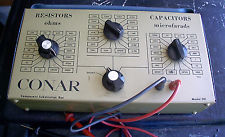 | |||
| 202 | CMOS Frequency Counter | 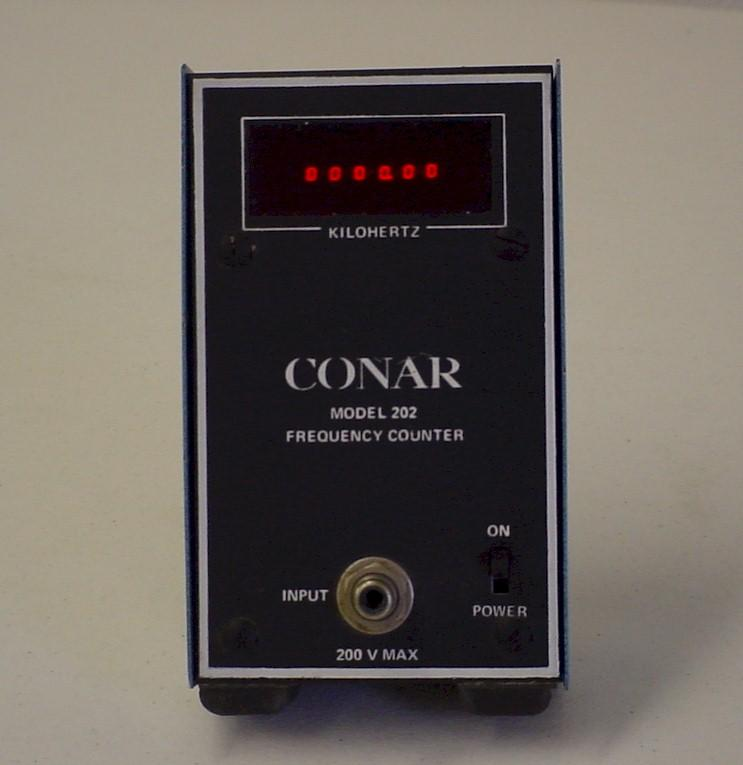 |
|
Special thanks to AD2CS for the scans. | |
| 211 | Volt/Ohm Meter, 6X4 vacuum tube |  |
|
||
| 212 | Volt/Ohm Meter, transistorized |  |
|
||
| 214 | Transistor Checker | 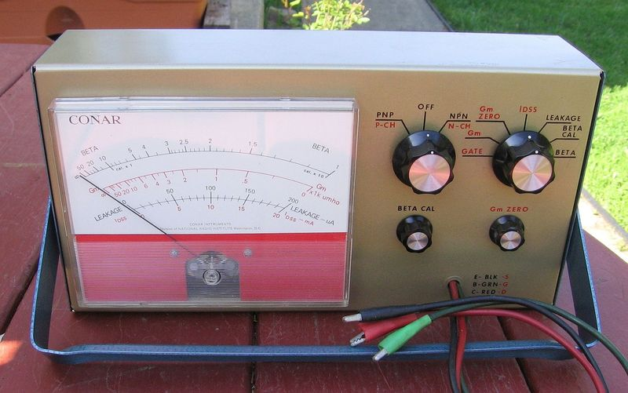 | Easily confused with the model 212 | ||
| 220 | Tube Tester | 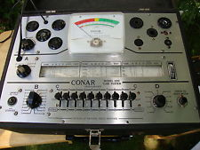 | |||
| 221 | Tube Tester | 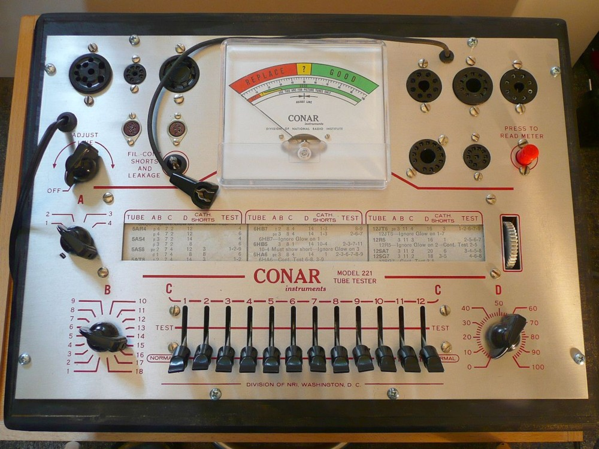 | |||
| 223 | Tube Tester |  |
|
"The Barbarian" | |
| 224 | Tube Tester | 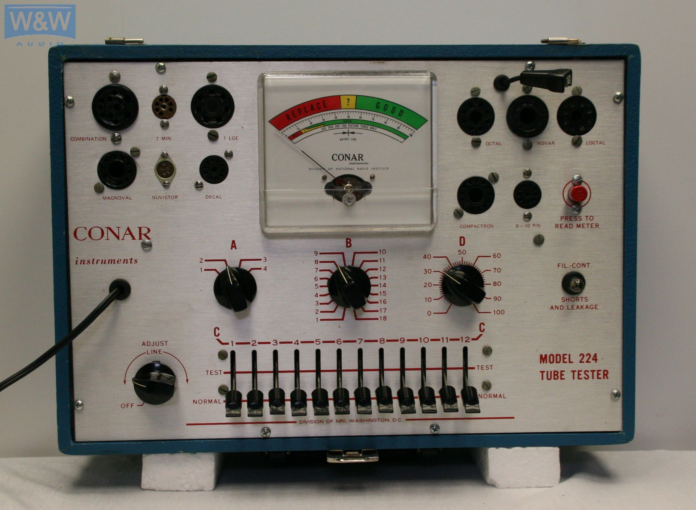 |
|
Review Video | |
| 224 data | Tube Tester Data | |
|||
| 230 | 1961 | Signal Tracer (Range: 170kHz-500kHz and 500kHz-1500khz) |
 |
|
Review video |
| 231 | Tuned Signal Tracer |  |
|
Special thanks to AD2CS for the scans. | |
| 240 | 1961 | Portable Volt-ohmmeter | 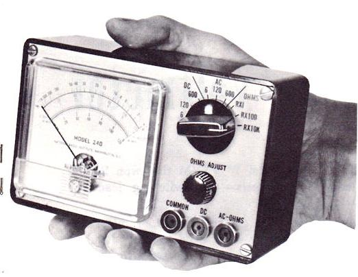 | ||
| 250 | 1961 | Oscilloscope |  |
|
|
| 251 | Oscilloscope | 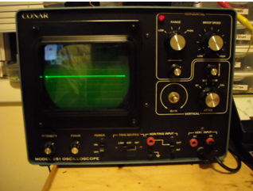 | |
Special thanks to W2RIK for the scans. | |
| 255 | Oscilloscope | 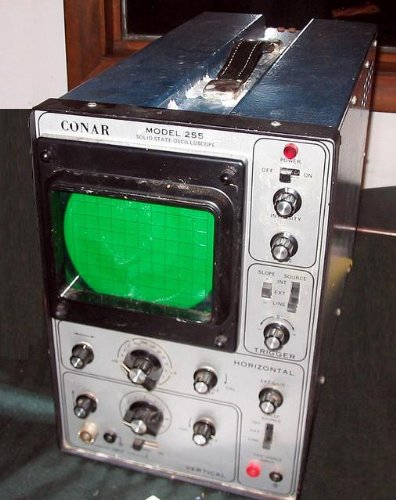 | |
||
| 261 | Auto Ignition Analyzer |  |
|||
| 280 | 1961 | Signal Generator |  |
|
Review Video |
| 281 | Signal Generator with digital readout |  |
Calibration video | ||
| 282 | Signal Generator with digital readout |  |
Internal upgrade of model 281. Still says 281 on outside. | ||
| 292 | Intercom Kit | |
|||
| 311 | 1961 | R/C Tester |  |
|
|
| 320 | Regulated Power Supply |  |
|
Special thanks to William Burg for the scans. | |
| 400 | 1964 | Novice CW Transmitter for 80m, 40m, 15m, crystal controlled. 15-25w output, chirpy. AKA: "Kit 3r" |
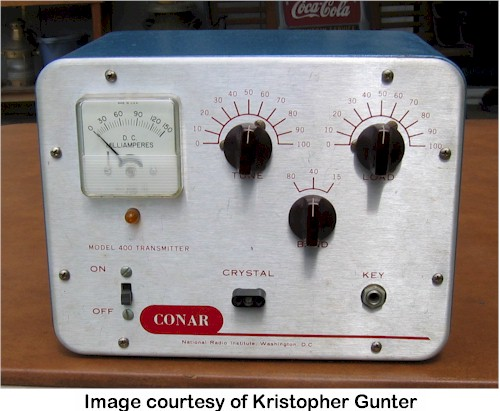 | |
W4JBM's Conar Twins Page Transmitter Modifications Video Review |
| 444 | Stereo Receiver |  |
|||
| 452 | 2m FM Transceiver | 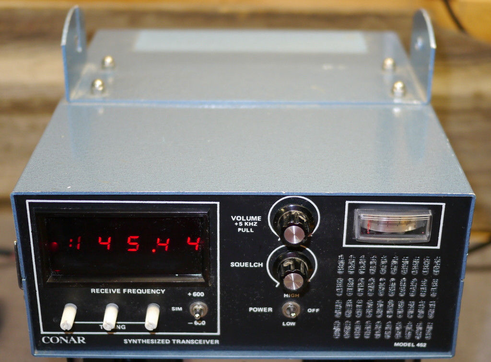 | |
||
| 500 | 1964 | Novice AM/CW Receiver for 80m, 40m, 15m Could also receive SSB in CW mode. AKA: "Kit 2r" |
 |
|
W4JBM's Conar Twins Page Receiver Modifications |
| 510 | Transistor Power Supply |  |
|||
| 610 | 1961 | Transistor Power Supply | 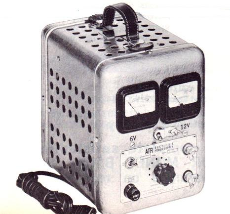 | ||
| 681 | Color Generator |  |
|||
| 682 | TV Pattern Generator | 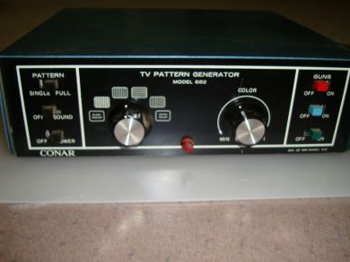 | |||
| 800 | 1965 | TV Camera with internal RF modulator Additional lens available. |
 |
Conar 800 Camera Website at SMECC.org | |
| 1400 | 3.5 digit, 1/2" display, digital LCD multimeter |  |
|
Thanks to Mark Burelle 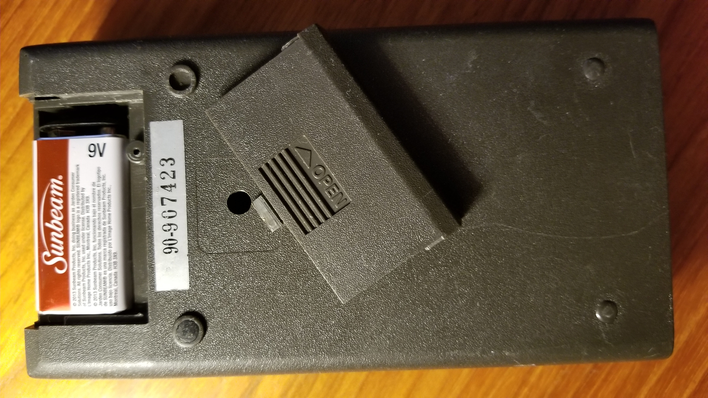
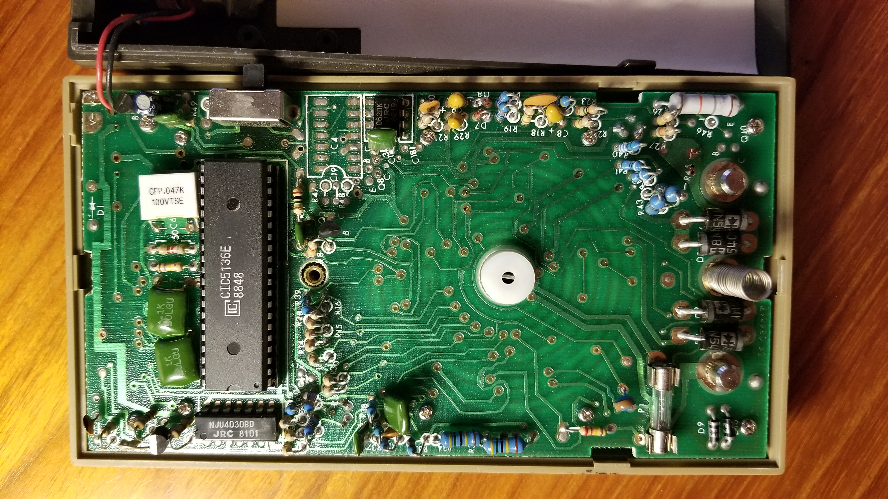
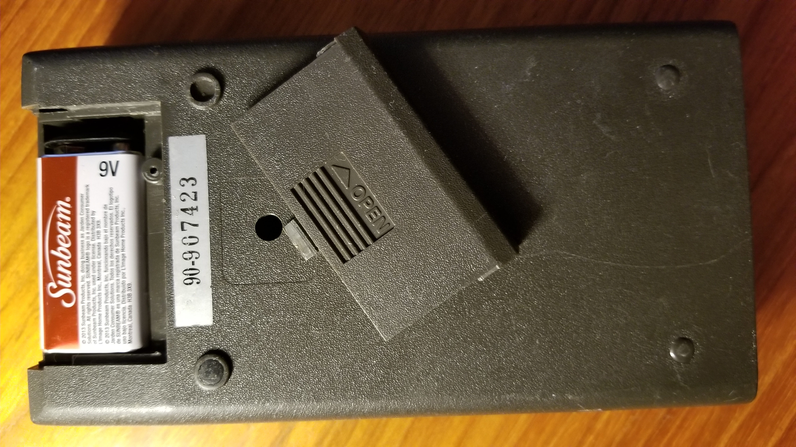
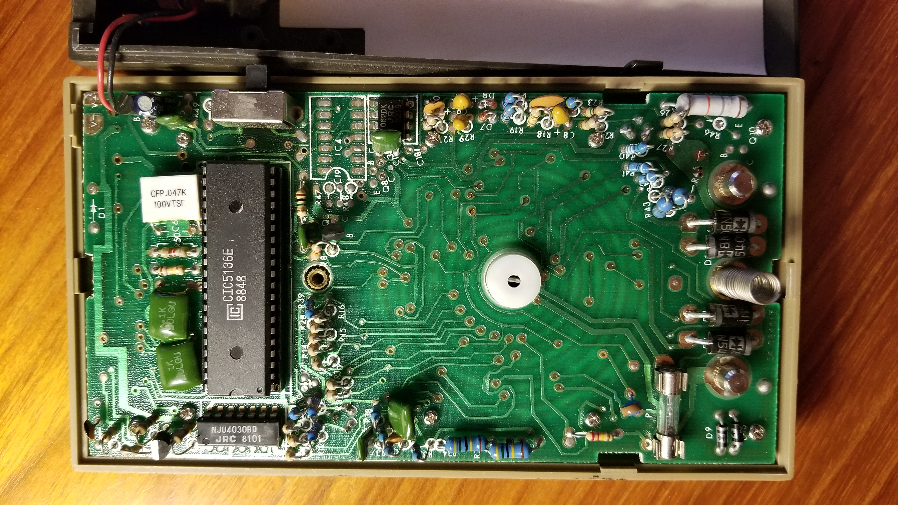
|
More Informational Resources
| Conar Catalogs | |
| 1966 Catalog | |
| 1967 Catalog | |
| NRI Journals | |
| 10 September 1967 |
|